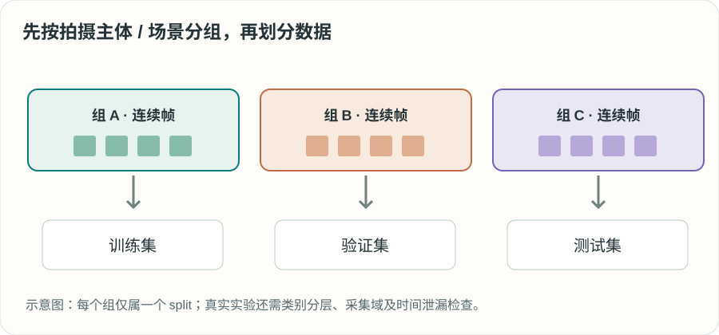
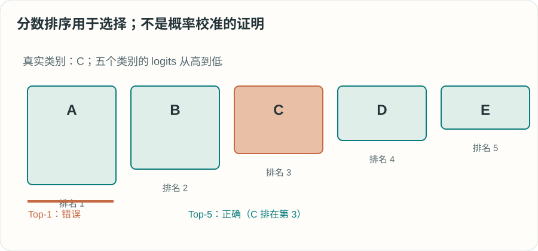
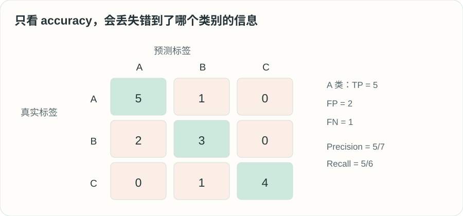

CHAPTER 07 · CLASSIFICATION
图像分类：让实验结果值得相信
模型得到一个类别标签之前，必须先定义类别集合、数据集划分、输入变换与评分协议。哪怕网络相同，数据泄漏与 Top-k 口径也会改变结论。
01 · 分类输出是一个有明确含义的向量
单标签多分类假定一张输入只对应一个目标类别，模型给出长度为 C 的 logits 向量。logits 是未归一化的分数，不必落在 0–1 之间；取最大值的索引用于 Top-1 类别判断。Softmax 可以把它们转成总和为 1 的相对概率，但这些数值并不保证已经校准。
C 是类别数，z 是 logits；实现时通常先减去 max(z) 防止指数溢出。
当一张图像同时含多个独立标签（例如“雨天”“车辆”“夜景”）时，应使用多标签目标与 Sigmoid/BCE 一类适合的损失，而不是强制所有类别互斥。
02 · MNIST、CIFAR 与 ImageNet：不是同一种难题
| 数据集 | 任务/典型形状 | 使用注意 |
|---|---|---|
| MNIST | 手写数字，28×28 单通道，10 类 | 背景简单，不代表真实自然场景 |
| CIFAR-10 | 32×32 RGB，10 类 | 小图分辨率影响微小物体细节 |
| ImageNet-1K / ILSVRC 2012 | 1000 类；常见整理为约 128 万训练、5 万验证、10 万测试图 | 官方比赛评估、预处理与模型版本需核对 |
ILSVRC 挑战的数据集、验证集和测试集有特定来源与标注协议。描述模型指标时，应同时说明 split、输入尺寸、单次或多裁剪推理、模型集成情况，以及 Top-1/Top-5 的具体定义。不能把论文 test 集冠军结果和后来的 torchvision 单模型 validation 指标放在同一列当作公平比较。

03 · 预处理在训练与验证之间必须有边界
以典型图像分类流程为例：解码 RGB → 训练时随机裁切/翻转 → 转浮点张量 → 使用训练集统计或权重指定的均值与标准差归一化 → 构造 batch。验证通常使用确定性的 resize/center crop，不应继续随机增强。若使用预训练权重，优先采用与该权重绑定的官方 transforms；否则模型接收的分布可能不一致。
均值和标准差属于训练得到的预处理参数，不应从验证和测试样本重新拟合。更隐蔽的泄漏来自同一拍摄地点、同一病人、多视角重复物体或同一视频片段的帧；这些相关图像应先根据可识别的组划分，再随机化组内顺序。
04 · Top-k、宏平均 F1 与混淆矩阵回答不同的问题
对于 C 个类别的 logits，Top-k 命中表示真实标签落在得分最高的 k 个类别中。k 必须不超过 C，且当 C 小于 5 时，所谓 Top-5 已失去正常的区分力。Top-k 不要求模型分数已经经过 softmax，因为 softmax 不改变排序。

Top-k 准确率是逐样本 0/1 命中率的平均；TopK_i 为该样本排名前 k 的类别集合。
混淆矩阵行通常是真值、列通常是预测（也有工具使用相反约定，必须写明）。对单个类，Precision = TP/(TP+FP)，Recall = TP/(TP+FN)，F1 为精确率与召回率的调和平均；macro-F1 对每个类等权平均，容易揭露少数类受损，而 micro-F1 更贴近全样本计数。

05 · 最小实验：自己计算 Top-k 与 macro-F1
下例没有训练任何图像模型；用人工 logits 验证评价函数，确保形状、索引和分母约定正确。代码只依赖 PyTorch，并包含至少一次非满 batch 情况的汇总提醒。
import torch
logits = torch.tensor([
[4., 3., 2., 1., 0.], # truth=2: top-1 miss, top-5 hit
[0., 5., 1., 2., 3.], # truth=1: top-1 hit
[1., 2., 3., 4., 5.], # truth=0: top-1 miss
])
truth = torch.tensor([2, 1, 0])
ranking = logits.argsort(dim=1, descending=True)
top1 = (ranking[:, :1] == truth[:, None]).any(dim=1).float().mean()
top5 = (ranking[:, :5] == truth[:, None]).any(dim=1).float().mean()
assert torch.isclose(top1, torch.tensor(1/3))
assert torch.isclose(top5, torch.tensor(1.0))
pred = torch.tensor([0, 0, 1, 1, 2, 2])
target = torch.tensor([0, 1, 1, 1, 2, 0])
f1 = []
for cls in range(3):
tp = ((pred == cls) & (target == cls)).sum().item()
fp = ((pred == cls) & (target != cls)).sum().item()
fn = ((pred != cls) & (target == cls)).sum().item()
f1.append(2*tp/(2*tp+fp+fn) if (2*tp+fp+fn) else 0.)
macro_f1 = sum(f1)/3
assert 0 <= macro_f1 <= 1
print("top1, top5, macroF1:", float(top1), float(top5), macro_f1)若类别完全未出现在标签和预测中，某些库允许该类 F1 定义为 0、忽略或返回 NaN；应将 absent class 处理方案写入实验报告。micro/macro 以相同数据统计时可比较，但不可只报最有利的那个。
06 · 从研究实验到可复现报告
一个可核查的实验至少记录：数据来源与授权、划分规则、类别索引映射、预处理与增强、训练批次大小、优化器、学习率日程、epoch、随机种子、权重版本、评估时 resize/crop、使用的计算设备与完整测试脚本。重复实验时还要报告方差，而不是挑最好的一次作为稳定结论。
检查数据集前先问三个问题：一个样本的“真值”是什么？同一个原始对象会不会同时出现在两个 split？是否因预训练和模型选择接触过验证集？ 这些因素可能比增加网络层数更大幅度影响分数。
检查理解：为什么“验证集表现好”不等于“测试集客观提升”？
当验证集被用于反复选择模型和超参数时，研究者会逐渐适应该验证集；最后仍需尽可能独立的测试评估来估计部署前泛化。
来源与适用边界
数据量为 ILSVRC 2012 常见发布版本的描述；新版本与下载镜像可能有不同的文件布局。所有矩阵与排名图均为教学合成样本。